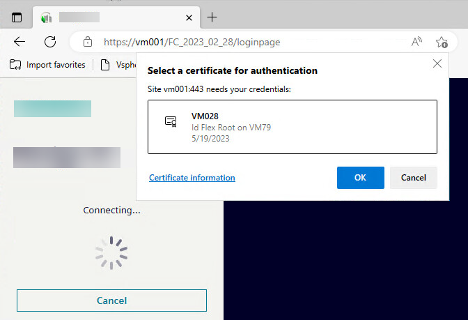
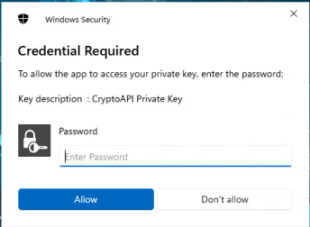
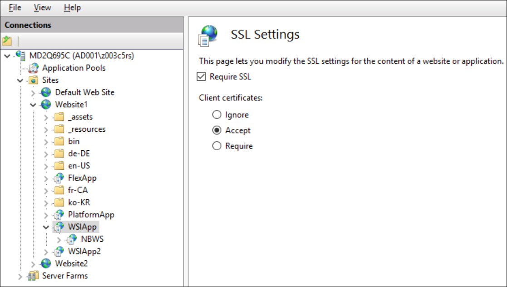

Check the Outcome from the Identified Flex Station
To verify the results of the above configuration, the final step is to log on to Desigo CC from the identified Flex station and check that the client identification is successful, and the client profile and scope/event/application rights correspond to those configured.
Launch the Identified Flex Client
Perform this procedure to start the identified Flex Client in a browser.
- The certificates for identified Flex client have been configured and the identified station object has been created in System Manager.
- On the identified Flex station, open a compatible browser. See Supported Browser for Identified Flex Client.
- In the address bar of the browser, enter the [Flex Client application URL].
NOTE: The URL is the one that was configured for the Flex Client application in SMC. - In the Select a Certificate dialog box, select the host certificate of the identified Flex client and click OK.
- This dialog box displays when the settings for IIS (website and web application) are set to Accept. See SSL Settings and Certificate Selection Popup.
- If the dialog does not display, or if you click Cancel, you can still proceed to log into Flex client without client identification. In this case, the Flex client will operate as an anonymous Flex client.

- If a Credential Required dialog box appears, enter the Password for the Flex client host certificate and click Allow.
- This is the same password that you created when importing the .PFX host certificate with Enable strong private key protection. See Import Certificates into the Flex Station.
- Note that the Credential Required dialog box may be concealed in the background, behind the browser window.

- Enter your Desigo CC user name and click Next.
- Enter your password and click Login.
- You are logged into the identified Flex client. On the Desigo CC server, if you select the corresponding identified station object in System Manager, the IsLoggedIn property is
True, and LoggedUserName shows the user who logged in.
Supported Browsers for Identified Flex Client
Note that the browsers which support identified Flex client are a subset of those which support the anonymous Flex client. Specifically client identification is supported on:
- Desktop operating systems:
- Windows: Chrome, Firefox and Edge
- MacOS: Safari, Chrome and Edge
- Mobile operating systems:
- Android: Chrome and Edge
- iOS: Safari
See the table below for more details.
Operating System | Browser | Flex client | Certificate selection popup / password | Remarks |
|---|---|---|---|---|
Windows 10 | Chrome | Yes
| Yes, with password. |
|
Edge | ||||
Firefox | Yes | Yes, without password. | Need to install client certificate explicitly in the Firefox browser. | |
MacOS | Safari | Yes | Yes, without password. | Need to provide the user credentials (fingerprints) of the Apple logged in user. |
Chrome | ||||
Edge | ||||
Firefox | No | n/a | n/a | |
Android 10
| Chrome | Yes | Yes, without password. | Need to install client certificate on Android device first. |
Edge | ||||
Firefox | No | n/a | n/a | |
iOS | Safari | Yes | Yes. Without password. | Need to install certificates on IOS and enable trust for Root. |
Chrome | No | n/a | Authentication will be successful, but only anonymous client will work. | |
Edge | ||||
Firefox |
SSL Settings and Certificate Selection Popup
The following table demonstrates behaviors of SSL settings (Require SSL and combination of Client Certificate settings) for Chrome. This is mainly for TLS/SSL settings of WSI app and not for Client Identification.

SSL Settings | No Certificates with Private Key Installed on PC | One or more Certificates with Private Key Installed on PC | Deployment Scenario |
|---|---|---|---|
Require SSL- Not Selected | No pop up displays and no client identification necessary as the host is same as server. | No pop up displays and can be ignored as no client identification necessary as the host is same as server. | Standalone Server |
Require SSL + Ignore Client Certificate | No certificate popup will display and no client identification possible. WSI communication will remain secure. | No certificate popup will display and no client identification possible. WSI communication will remain secure. | Server and a Remote Web Server (IIS) |
Require SSL + Accept Client Certificate | No certificate popup displays and no client identification possible. WSI communication will remain secure. | Certificate pop-up displays with all certificates installed and having the private key. In this case, certificate should be selected and a private key is necessary for Client Identification otherwise client will be treated as anonymous. WSI communication will remain secure. | Server and a Remote Web Server (IIS) |
Require SSL + Require Client Certificate | No certificate popup displays and no client identification possible. WSI communication will remain secure. | Certificate pop-up displays with all certificates installed and having the private key. In this case, a certificate should be selected and a private key is necessary for Client Identification. Working with anonymous client is not possible. Here if no certificate selected, you cannot logon. WSI communication will be secure in case of successful logon to the system. | Server and a Remote Web Server (IIS) |